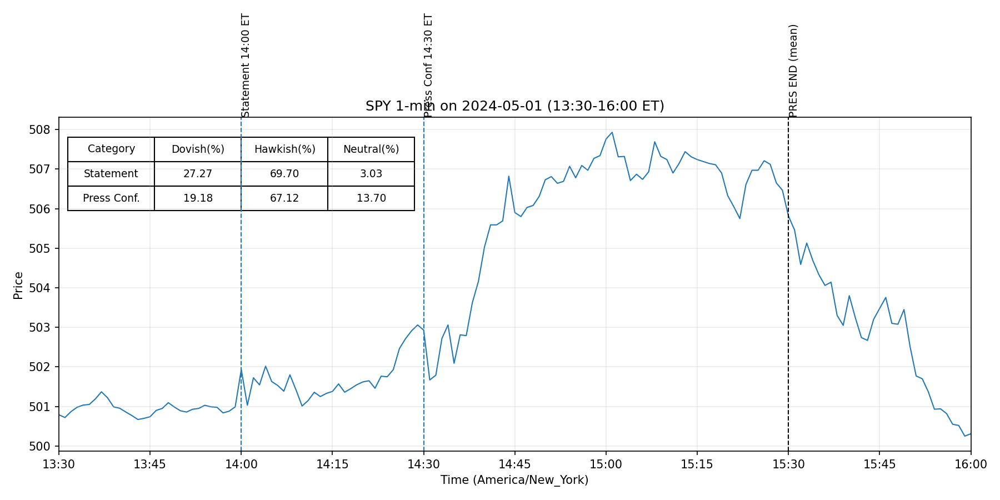
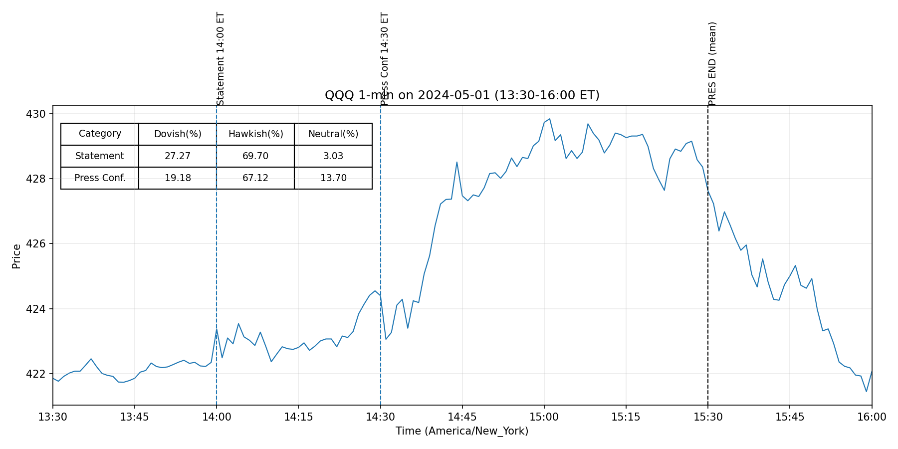
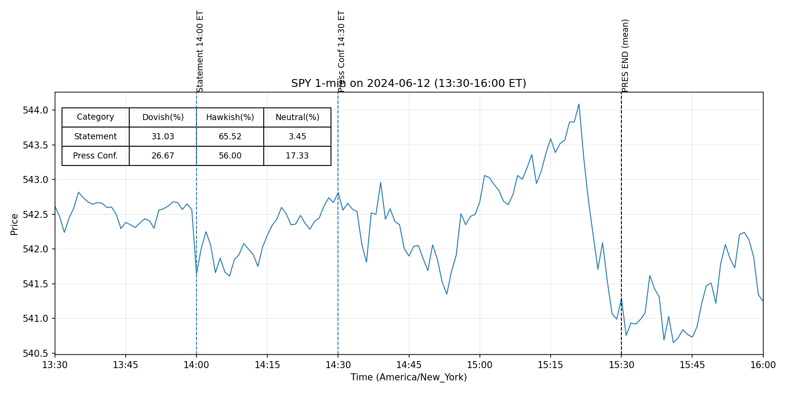
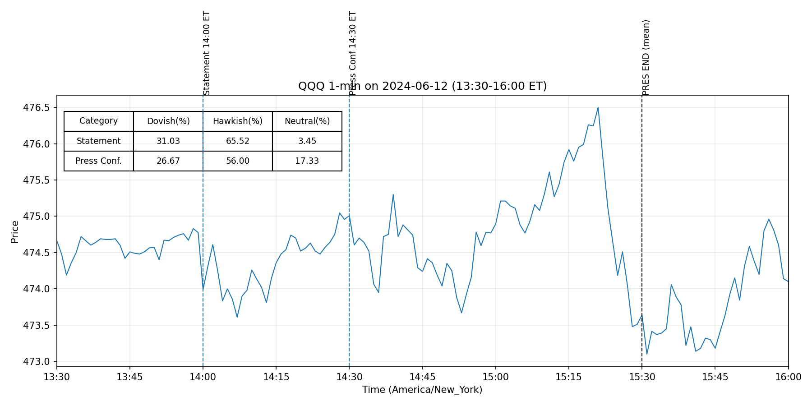
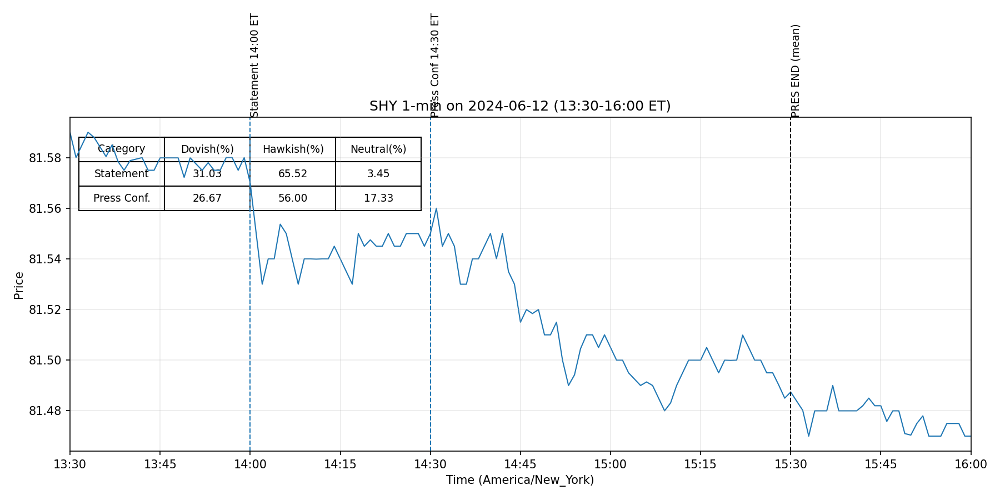

20240501



20240612



Job gains have remained strong, and the unemployment rate has remained low. (old:0.582 new:0.582)
Inflation has eased over the past year but remains elevated. (old:0.511 new:0.511)
The Committee seeks to achieve maximum employment and inflation at the rate of 2 percent over the longer run. (old:0.612 new:0.612)
The Committee judges that the risks to achieving its employment and inflation goals have moved toward better balance over the past year. (old:0.506 new:0.506)
The economic outlook is uncertain, and the Committee remains highly attentive to inflation risks. (old:0.429 new:0.429)
In support of its goals, the Committee decided to maintain the target range for the federal funds rate at 5-1/4 to 5-1/2 percent. (old:0.505 new:0.505)
In considering any adjustments to the target range for the federal funds rate, the Committee will carefully assess incoming data, the evolving outlook, and the balance of risks. (old:0.427 new:0.427)
The Committee does not expect it will be appropriate to reduce the target range until it has gained greater confidence that inflation is moving sustainably toward 2 percent. (old:0.425 new:0.425)
In assessing the appropriate stance of monetary policy, the Committee will continue to monitor the implications of incoming information for the economic outlook. (old:0.775 new:0.775)
The Committee’s assessments will take into account a wide range of information, including readings on labor market conditions, inflation pressures and inflation expectations, and financial and international developments. (old:0.536 new:0.536)
Voting for the monetary policy action were Jerome H. Powell, Chair; John C. Williams, Vice Chair; Thomas I. Barkin; Michael S. Barr; Raphael W. Bostic; Michelle W. Bowman; Lisa D. Cook; Mary C. Daly; Philip N. Jefferson; Adriana D. Kugler; Loretta J. Mester; and Christopher J. Waller. (old:0.791 new:0.791)
-0- Attachment For media inquiries, please email media@frb.gov or call 202-452-2955. (old:0.646 new:0.646)
More information regarding open market operations and reinvestments may be found on the Federal Reserve Bank of New York's website. (old:0.801 new:0.801)
For release at 2:00 p.m. EDT June 12, 2024 Recent indicators suggest that economic activity has continued to expand at a solid pace. (0.461)
In recent months, there has been modest further progress toward the Committee’s 2 percent inflation objective. (0.463)
In addition, the Committee will continue reducing its holdings of Treasury securities and agency debt and agency mortgage‑backed securities. (0.616)
The Committee is strongly committed to returning inflation to its 2 percent objective. (0.552)
The Committee would be prepared to adjust the stance of monetary policy as appropriate if risks emerge that (more) -2- could impede the attainment of the Committee’s goals. (0.714)
For release at 2:00 p.m. EDT June 12, 2024 Decisions Regarding Monetary Policy Implementation The Federal Reserve has made the following decisions to implement the monetary policy stance announced by the Federal Open Market Committee in its statement on June 12, 2024: • The Board of Governors of the Federal Reserve System voted unanimously to maintain the interest rate paid on reserve balances at 5.4 percent, effective June 13, 2024. (0.518)
• As part of its policy decision, the Federal Open Market Committee voted to direct the Open Market Desk at the Federal Reserve Bank of New York, until instructed otherwise, to execute transactions in the System Open Market Account in accordance with the following domestic policy directive: "Effective June 13, 2024, the Federal Open Market Committee directs the Desk to: (0.526)
Conduct standing overnight repurchase agreement operations with a minimum bid o rate of 5.5 percent and with an aggregate operation limit of $500 billion. (0.724)
Conduct standing overnight reverse repurchase agreement operations at an o offering rate of 5.3 percent and with a per-counterparty limit of $160 billion per day. (0.761)
Roll over at auction the amount of principal payments from the Federal Reserve's o holdings of Treasury securities maturing in each calendar month that exceeds a cap of $25 billion per month. (0.508)
Redeem Treasury coupon securities up to this monthly cap and Treasury bills to the extent that coupon principal payments are less than the monthly cap. (0.398)
Reinvest the amount of principal payments from the Federal Reserve's holdings of o agency debt and agency mortgage-backed securities (MBS) received in each calendar month that exceeds a cap of $35 billion per month into Treasury securities to roughly match the maturity composition of Treasury securities outstanding. (0.536)
Allow modest deviations from stated amounts for reinvestments, if needed for o operational reasons. (0.769)
Engage in dollar roll and coupon swap transactions as necessary to facilitate o settlement of the Federal Reserve's agency MBS transactions."" (0.552)
• In a related action, the Board of Governors of the Federal Reserve System voted unanimously to approve the establishment of the primary credit rate at the existing level of 5.5 percent. (0.561)
(more) -2- This information will be updated as appropriate to reflect decisions of the Federal Open Market Committee or the Board of Governors regarding details of the Federal Reserve's operational tools and approach used to implement monetary policy. (0.625)
For release at 2:00 p.m. EDT May 1, 2024
Recent indicators suggest that economic activity has continued to expand at a solid pace. (0.466)
In recent months, there has been a lack of further
progress toward the Committee’s 2 percent inflation objective. (0.507)
In addition, the Committee will continue reducing its holdings of Treasury securities and agency
debt and agency mortgage-backed securities. (0.621)
Beginning in June, the Committee will slow the
pace of decline of its securities holdings by reducing the monthly redemption cap on Treasury
securities from $60 billion to $25 billion. (0.605)
The Committee will maintain the monthly redemption
cap on agency debt and agency mortgage-backed securities at $35 billion and will reinvest any
(more)
-2-
principal payments in excess of this cap into Treasury securities. (0.602)
The Committee is strongly
committed to returning inflation to its 2 percent objective. (0.552)
The Committee
would be prepared to adjust the stance of monetary policy as appropriate if risks emerge that
could impede the attainment of the Committee’s goals. (0.721)
For release at 2:00 p.m. EDT May 1, 2024
Decisions Regarding Monetary Policy Implementation
The Federal Reserve has made the following decisions to implement the monetary policy stance
announced by the Federal Open Market Committee in its statement on May 1, 2024:
• The Board of Governors of the Federal Reserve System voted unanimously to maintain the
interest rate paid on reserve balances at 5.4 percent, effective May 2, 2024. (0.508)
• As part of its policy decision, the Federal Open Market Committee voted to direct the Open
Market Desk at the Federal Reserve Bank of New York, until instructed otherwise, to
execute transactions in the System Open Market Account in accordance with the following
domestic policy directive:
"Effective May 2, 2024, the Federal Open Market Committee directs the Desk to: (0.515)
o Conduct standing overnight repurchase agreement operations with a minimum bid
rate of 5.5 percent and with an aggregate operation limit of $500 billion. (0.729)
o Conduct standing overnight reverse repurchase agreement operations at an
offering rate of 5.3 percent and with a per-counterparty limit of $160 billion per
day. (0.759)
o Roll over at auction the amount of principal payments from the Federal Reserve's
holdings of Treasury securities maturing in May that exceeds a cap of $60 billion
per month. (0.532)
Beginning on June 1, roll over at auction the amount of principal
payments from the Federal Reserve's holdings of Treasury securities maturing in
each calendar month that exceeds a cap of $25 billion per month. (0.540)
Redeem
Treasury coupon securities up to these monthly caps and Treasury bills to the
extent that coupon principal payments are less than the monthly caps. (0.405)
o Reinvest into agency mortgage-backed securities (MBS) the amount of principal
payments from the Federal Reserve's holdings of agency debt and agency MBS
received in May that exceeds a cap of $35 billion per month. (0.641)
Beginning on June 1,
reinvest the amount of principal payments from the Federal Reserve's holdings of
agency debt and agency MBS received in each calendar month that exceeds a cap
of $35 billion per month into Treasury securities to roughly match the maturity
composition of Treasury securities outstanding. (0.538)
o Allow modest deviations from stated amounts for reinvestments, if needed for
operational reasons. (0.756)
o Engage in dollar roll and coupon swap transactions as necessary to facilitate
settlement of the Federal Reserve's agency MBS transactions."" (0.559)
(more)
-2-
• In a related action, the Board of Governors of the Federal Reserve System voted
unanimously to approve the establishment of the primary credit rate at the existing level
of 5.5 percent. (0.537)
This information will be updated as appropriate to reflect decisions of the Federal Open Market
Committee or the Board of Governors regarding details of the Federal Reserve's operational tools
and approach used to implement monetary policy. (0.603)